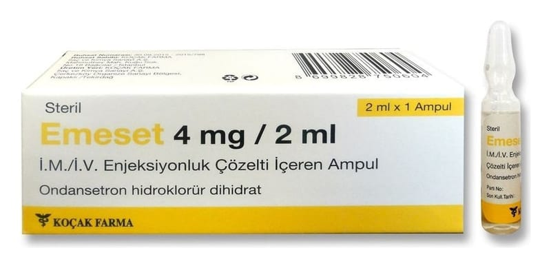

Emeset 4 mg/2 ml IM/IV Enjeksiyonluk Çözelti İçeren Ampul

Ne için kullanılır
KT · Bölüm 1EMES ET ondansetron etkin maddesini içerir. Enjeksiyon veya infüzyon için şeffaf, renksiz, steril çözelti içeren bir ampullük ambalajlar halindedir.
EMESET anti-emetik olarak adlandırılan bir ilaç grubuna dahildir. Bazı ilaç tedavileri (örn; kanser ilaçları) kendinizi hasta hissetmenize ve kusmanıza neden olabilir. EMESET kendinizi hasta hissetmenizi veya kusmanızı önler. EMESET, ilaç ve ışınla yapılan kanser tedavilerine bağlı bulantı ve kusmayı önlemek için kullanılır. Ayrıca, ameliyatlardan sonra ortaya çıkan bulantı ve kusmaları önlemek için de kullanılır.
Doktorunuz size ve sizin koşullarınıza uygun olarak bu ilacı seçmiştir.